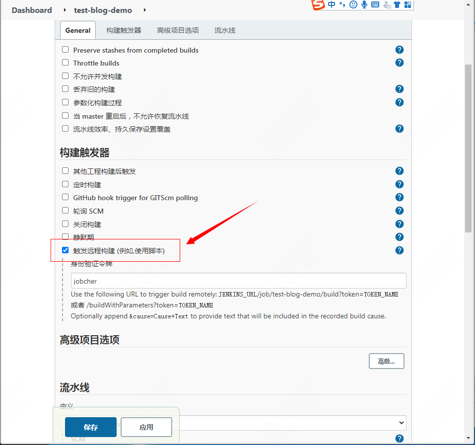
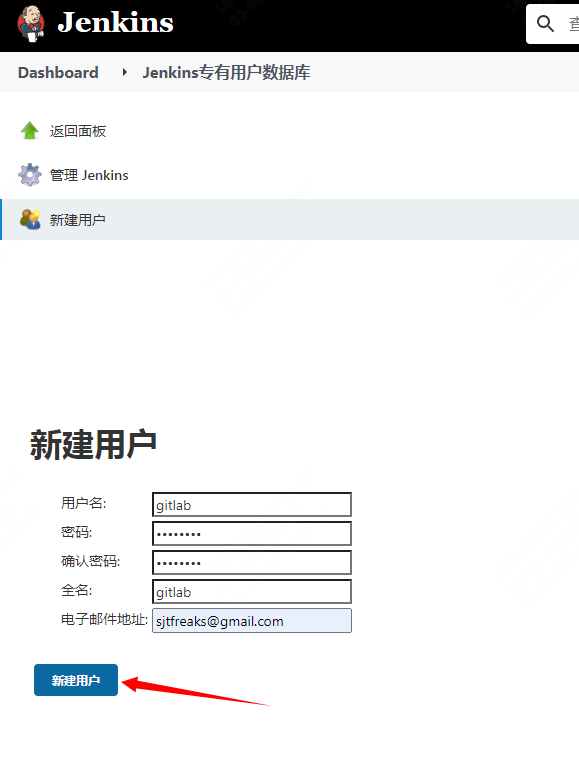
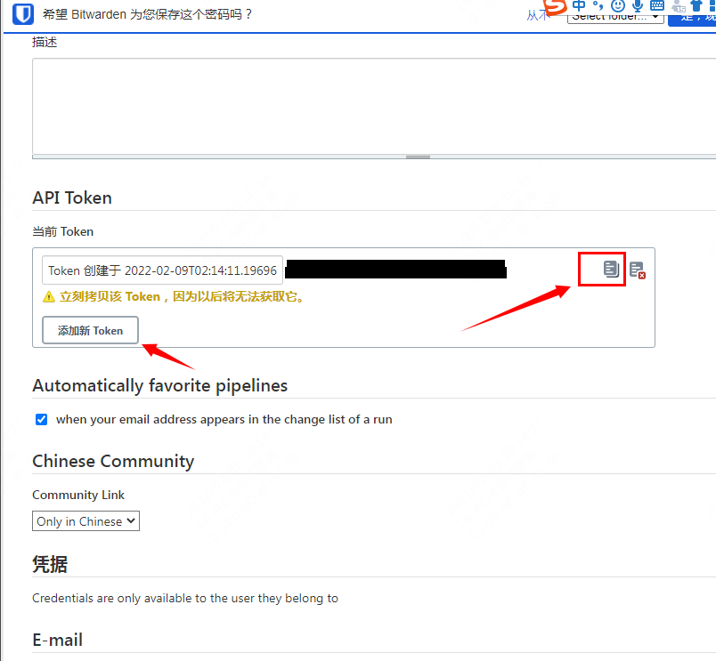
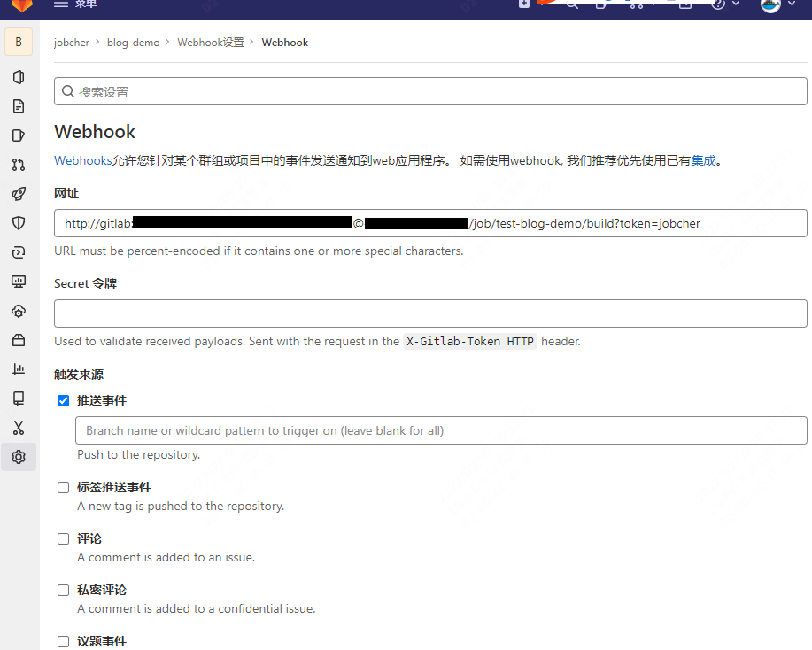

Jenkins 安装与使用
Jenkins 安装与使用
代码在本地修改—-》提交到远程 gitlab—-》触发 jenkins 整个自动化构建流程（打包，测试，发布，部署）
安装 docker
docker 安装 jenkins
docker run \
-u root \
-d \
-p 8080:8080 \
-p 50000:50000 \
-v jenkins-data:/var/jenkins_home \
-v /etc/localtime:/etc/localtime:ro \
-v /var/run/docker.sock:/var/run/docker.sock \
--restart=always \
jenkinsci/blueocean
访问
http://localhost:8080
显示初始密码
docker exec -ti <容器名称> sh
cat /var/jenkins_home/secrets/initialAdminPassword
工作流程
- 先定义一个流水线项目，指定项目的 git 位置
- git 位置自动拉取代码
- 解析拉取代码里面的 Jenkinsfile 文件
- 按照 Jenkinsfile 指定的流水线开始加工项目
Jenkinsfile 语法
基础语法,在仓库创建一个 Jenkinsfile 文件
pipeline {
/* 全部的CICD流程都在这里定义 */
//任意代理可用就可以执行
agent any
//定义流水线的加工流程
stages {
/* 流水线的所有阶段
1.编译 "常量"'变量'
2.测试
3.打包
4.部署
*/
stage('代码编译'){
steps {
//要做的所有事情
echo "编译……"
}
}
stage('代码测试'){
steps {
//要做的所有事情
echo "测试……"
}
}
stage('打包'){
steps {
//要做的所有事情
echo "打包……"
}
}
stage('部署'){
steps {
//要做的所有事情
echo "部署……"
}
}
}
}
构建远程触发
-
在 jenkins 上选择:项目->配置->构建触发器->勾选触发远程构建
 -
新疆 gitlab 账户，登录新用户并天剑 token 令牌

 -
找到 gitlab 设置->webhook

网站格式
http://<USER>:<TOKENAPI>@<JENKINS-URL>/job/test-blog-demo/build?token=<TOKEN>